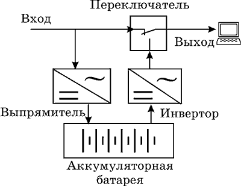
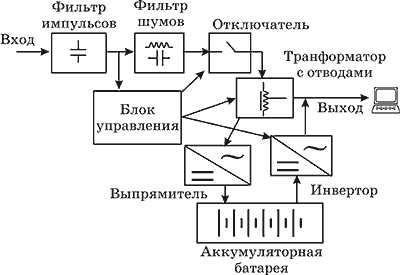
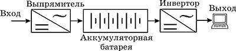

Все меняется, но кое-что в нашей жизни остается неизменным, например, традиционно низкое качество электропитания.
Примерно через три-шесть месяцев работы стоимость данных, хранящихся на Вашем компьютере, начинает превышать стоимость самого компьютера. Для сервера сети такая ситуация может возникнуть уже через несколько недель после его установки.
Даже если сбои и не приводят к катастрофическим последствиям сразу, то спустя некоторое время тонкая электронная начинка вашего ПК может попросту "взбунтоваться" из-за постоянных циклов включения/выключения. Сэкономив сегодня на "питании" оборудования, завтра может возникнуть ситуация, когда "платить дважды" будет попросту не за что - данные окажутся безвозвратно утерянными. А как неоднократно уже было сказано, в сегодняшнем мире основную ценность имеет информация.
Исследования, проведенные IBM, показали, что компьютеры сталкиваются с проблемами электропитания в среднем более 120 раз в месяц. Последствия этих воздействий различны: у компьютера это может вызвать и блокировку клавиатуры, и утрату данных на жестком диске - вплоть до полной потери работоспособности диска.
К сожалению, ситуация с электропитанием вряд ли улучшится в ближайшем будущем - и это обусловлено вполне объективными причинами. Электростанций не становится больше, а устаревшее промышленное оборудование будет заменено нескоро в силу недостатка средств у предприятий. А значит, нам с этими проблемами жить.
Согласитесь, что утерянные файлы данных и поврежденные компоненты, даже при желании, малорентабельными последствиями отключения энергии не назовешь. Другая проблема, с решением которой приходится сталкиваться в подобной ситуации, состоит в том, что после того как питание будет восстановлено, сеть необходимо привести в прежнее состояние: неожиданное включение питания может сопровождаться скачками напряжения. В качестве меры предосторожности администраторам сетей следует проследить за тем, чтобы все персональные компьютеры, нагреватели и кондиционеры были выключены после прекращения подачи энергии.
Качество электроэнергии может быть очень разным даже в пределах одного города и района. Особенно сложна ситуация с электропитанием в промышленной зоне, где нередко арендуют офисы небольшие компании. Обилие энергоемкого промышленного оборудования, в том числе устаревшего и частично неисправного, вызывает регулярные отключения, всплески, шумы и перекосы фаз. Сплошь и рядом наблюдается ситуация, когда утренние "включения рубильника" на предприятии вызывают отключения электропитания в соседних фирмах и приводят к отказам техники.
Домашние пользователи часто предоставлены самим себе в вопросах защиты своего железа. Если рядом с домом идет строительство (т.е. регулярно ведется сварка), ходят трамваи и электрички, нужно обратить внимание на заземление источника бесперебойного питания (ИБП, UPS) или фильтра - это абсолютно необходимо для защиты от импульсных перенапряжений.
Если проблема некачественного питания стоит достаточно серьезно (напряжение колеблется в широких пределах и есть опасность наведенных импульсных помех), обратите внимание также и на защиту модема. Возможно, имеет смысл приобрести интерактивный ИБП со встроенным фильтром для телефонной линии и локальной сети.
Начнем с описания тех явлений, с которыми может столкнуться компьютерное оборудование. От того, что происходит в сети электропитания, зависят наши действия по защите ПК.
Наиболее распространенной проблемой питания является падение напряжения - кратковременное или длительное. Чаще всего пониженное напряжение является результатом перегрузки электросети. В жаркие дни в офисных комплексах напряжение понижено из-за интенсивного использования кондиционеров, а зимой - вследствие включения дополнительных электрообогревателей. Результатом падения напряжения могут стать произвольные перезагрузки компьютеров и потеря данных на дисках.
Тяжелым случаем является авария электропитания - отсутствие напряжения в сети. Причиной сбоя питания может быть перегрузка сети (слишком много мощных нагрузок - типичная ситуация для холодной зимы, когда пользователи включают многокиловаттные обогреватели, в том числе самодельные). Последствия понятны - невозможно работать, и кроме того, вероятна потеря данных на винчестерах (вместе с самим винчестером).
Распространенная беда наших электросетей - импульсное перенапряжение, мгновенное и значительное увеличение напряжения. Обладающее большой энергией, импульсное перенапряжение вызывает серьезные повреждения или полное разрушение любого электронного оборудования. Обычно его причиной становится близкий разряд молнии, а также восстановление напряжения после обрыва линии электропередачи. В городе грозы вызывают импульсные наводки в телефонных линиях и сетевых кабелях, причем столь сильные, что "железо" выходит из строя.
При выключении мощной нагрузки (электродвигателя в кондиционере или бытовом электроприборе) возникает всплеск - кратковременное повышение напряжения длительностью обычно не более 1/120 секунды. Последствия всплеска могут быть различными - все зависит от того, насколько напряжение всплеска выходит за пределы диапазона напряжений, разрешенного для данного оборудования. Чаще всего устройство отключается вследствие срабатывания защиты. В тяжелых случаях повреждаются цепи питания.
Еще одна неприятность - электромагнитные и радиошумы, которые нарушают синусоидальную форму напряжения в сети. Шумы вызываются многими факторами и явлениями: молниями, включением мощных нагрузок, генераторов, радиопередатчиков и промышленного оборудования. Как правило, причинами шума линий являются электромагнитные и радиопомехи. Шумы приводят к неустойчивой работе оборудования, а также к полной или частичной потере передаваемой информации. Понятие "шум линии" используют для обозначения случайных, нежелательных электрических импульсов, налагающихся на переменный ток или волны напряжения правильной формы. Переменный ток имеет вид синусоиды с частотой 50 Гц и амплитудой 220 В; график переменного тока сам по себе гладкий, однако шум линии приводит к тому, что форма сигнала оказывается с зазубринами. Шум линии приводит зачастую к появлению на мониторах компьютеров статического электричества, вызываемого перекрестными помехами между трансформатором питания и схемотехникой видеосистемы. Возникающая рябь изображения крайне раздражает и при длительном воздействии может привести к усталости глаз.
ИБП, содержащие блоки подавления шума, которые уменьшают шум линии, возникающий из-за интерференции электро-магнитных или радиопомех, помогут нейтрализовать эту проблему. Такие блоки подавления шума работают аналогично частотному фильтру, пропускающему 50 Гц и гасящему все другие частоты. На входе блока подавления шума может быть "зазубренная" волна, однако на его выходе будет "чистая" синусоида с частотой 50 Гц. В результате изображения на экране станут четче, а нагрузка на глаза меньше. Подавление шума измеряется в децибелах на конкретной частоте. Чем значение в децибелах выше, тем лучше защита от шума.
Наиболее распространенным видом неполадок в больших городах являются долговременные (с 8 утра по 7 вечера) подсадки напряжения.
Для защиты техники от некачественного электропитания используются ИБП.. Изначально они использовались для того, чтобы при аварии в электросети за счет переключения нагрузки на аккумуляторы поддержать работу компьютеров в течение времени, достаточного для корректного закрытия приложений и операционной системы. Впоследствии у ИБП появились дополнительные функции - стабилизация напряжения, фильтрация импульсов и т. д., возникло несколько типов ИБП, ориентированных на разные сегменты рынка и на решение различных проблем электропитания.
В современные офисные ИБП нередко встраиваются фильтры импульсных помех для локальной сети и телефонной линии.
Чтобы правильно выбрать тип ИБП, необходимо точно понимать характер проблем с электроснабжением. Однако диагностика электросети - дело очень непростое, если только это не банальные отключения питания, падения напряжения и всплески.
Впрочем, для компаний и организаций выход есть - можно приобрести или арендовать ИБП небольшой мощности и запитать через него одно из устройств, бесперебойное функционирование которого заведомо важно для нормальной работы организации. Главное, чтобы в данном ИБП была предусмотрена возможность соединения с ПК по COM- или USB-интерфейсу и поддержка работы с управляющим и диагностическим ПО того же производителя. Установив программу на ПК, который соединен с работающим ИБП, можно регистрировать все события, происходящие в электросети (и, естественно, ответные действия ИБП). А документированное наличие помех и сбоев питания позволит обосновать выделение средств на комплексное решение защиты электросети организации.

Самые простые и, соответственно, недорогие устройства - это резервные ИБП, они же off-line или Standby. Они представляют собой источники питания на базе аккумуляторных батарей, которые включаются в работу лишь в том случае, если напряжение питания в сети выходит за пределы заранее установленных ограничений. Скажем, если в настройках ИБП было установлено допустимое напряжение от 190 до 240 В, то ИБП будет переключаться на питание нагрузки от аккумуляторных батарей при уровне входного напряжения ниже 190 В или выше 240 В. Входное напряжение в них подается напрямую (без фильтров :-( ) на выход и одновременно на аккумулятор, подзаряжая его.Преимущества схемы offline заключаются в ее простоте и экономичности. Однако за все приходится платить: типичный резервный ИБП не поддерживает стабилизацию выходного напряжения, если оно не выходит за рамки допустимого диапазона. Главный недостаток это то, что источнику бесперебойного питания требуется время на переключение из нормального режима в аварийный от 4 до 15 мс, современные компьютеры рассчитаны на отключения питания 10-20 мс.
Лучше всего использовать резервный ИБП для защиты от аварийных и плановых отключений питания. Встроенные фильтры, кроме того, смогут защитить оборудование от шумов в сети. Правда, для эффективной защиты от всплесков и импульсных перенапряжений ИБП необходимо заземлять.
В случае стабильно пониженного (или повышенного) напряжения off-line ИБП нуждается в настройке величины порогового напряжения переключения на батареи - иначе последние выйдут из строя (с помощью DIP-переключателей на задней стороне ИБП, конечно, если таковые имеются). А при постоянно повторяющихся скачках напряжения за пределы допустимых резервный ИБП вообще не помощник. Ведь если скачки происходят достаточно часто, ИБП, каждый раз переключаясь на питание от батарей, не успевает их зарядить, и при исчезновении напряжения в сети не обеспечит достаточной продолжительности работы защищаемого устройства. В такой ситуации нужны либо интерактивные ИБП, о которых будет сказано ниже, либо резервные ИБП со встроенным стабилизатором напряжения. Отличить эти ИБП от <нестабилизированных прототипов> можно по суффиксу AVR (Automatic Voltage Regulator) в названии устройства.

От недостатков резервных устройств свободны линейно-интерактивные ИБП, в которых нагрузка всегда запитывается через инвертор. Благодаря этому переключение в аварийный режим происходит синхронно, без потери фазы. Кстати, поскольку в линейно-интерактивных устройствах батареи заряжаются также через инвертор, это существенно (в некоторых случаях - с двух до пяти лет) увеличивает их срок службы в наших условиях. Наличие на входе ступенчатого стабилизатора (бустера), который отслеживает и фильтрует напряжение, поступающее из электросети, перед его подачей на подключенное устройство. Переход на питание от батарей предусматривается только в случаях, когда напряжение сети падает ниже приемлемого уровня или превышает его. Вследствие этого ИБП (UPS) способен выдерживать длительные глубокие "просадки" входного сетевого напряжения (одна из наиболее распространенных неполадок российских электросетей) без перехода на аккумуляторные батареи. Переключение "сеть-батарея" происходит значительно более гладко, чем у ИБП с переключением (Off-line) прежде всего потому, что совпадают формы кривой напряжения на обоих режимах работы. Сам процесс переключения (вместе со временем обнаружения сбоя) занимает менее четверти периода синусоиды (примерно 3-4 мс). В зависимости от фазы напряжения в момент сбоя сети, сопутствующие переключению переходные процессы могут продолжаться до 20 мс, т.е. на протяжении периода синусоиды.Управляемые источники бесперебойного питания обычно называются интеллектуальными (smart), это те же линейно-интерактивные ИБП, только подключенные к компьютеру через информационные порт (СОМ или USB) и для которых установлено соответствующее программное обеспечение. Подобные устройства могут регистрировать события, непрерывно контролировать качество энергоснабжения, сообщать о состоянии батарей и выполнять другую диагностику. Они также автоматически выгружают с сервера операционную систему в случае, когда продолжительность отсутствия напряжения превышает время автономной работы ИБП. Большинство управляющих программ способно строить полезные диаграммы различных характеристик, описывающих качество электропитания, в частности, частоты и уровня напряжения. Используя программы управления ИБП, необходимые характеристики можно отображать или сохранять в базе данных для дальнейшего просмотра. Возможность контроля напряжения удобна для предотвращения и диагностирования сбоев в сети.
При выборе интерактивного ИБП нужно помнить, что эти устройства делятся по качеству выходного напряжения на два класса - со ступенчатой аппроксимацией синусоиды и чистой синусоидой. Если оборудование (например, телекоммуникационное) требует на входе качественной синусоиды без ступенек и помех, интерактивный ИБП нужно выбирать с чистой синусоидой.

Основные преимущества ИБП непрерывного действия (online-ИБП) заключаются в полной фильтрации и сглаживании любых колебаний входного напряжения и высоковольтных импульсов. При этом переключение в "аварийный" режим осуществляется практически мгновенно.К недостаткам схемы on-line относятся сложность и более высокая стоимость, а также худший КПД в сравнении с резервными и интерактивными системами. Кроме того, on-line ИБП первого поколения из-за импульсного потребления тока выпрямителем вносили достаточно серьезные помехи (до 10 %) в питающую сеть, что негативно влияло на устройства, не защищенные ИБП. Впрочем, сейчас эта проблема решена применением фильтров и изолирующих трансформаторов. Так или иначе, схема online полностью защищает нагрузку от всех существующих проблем электропитания и используется для защиты любого оборудования, для которого необходимо высокое качество питающего напряжения.
Что нужно защищать:
Ниже рассмотрен список критериев, которые следует учитывать при определении требований и выборе конкретного ИБП.
Величина нагрузки. Наиболее простым критерием выбора ИБП является величина нагрузки (мощность), измеряемая в киловольт-амперах (kVA). Этот показатель представляет собой количество энергии, необходимое защищаемому устройству для нормальной работы. Мощность устройства можно грубо оценить, используя следующую формулу: кВА = вольты*амперы/1000 (главное не перепутать 1000!=1024). Приблизительно перевести вольт*амперы (ВА) в привычные, для нас, ватты (Вт, W) можно умножив на мощность в ВА (или кВА) на 0,7 (средне-статистический ПК можно оценить в 250-350 Вт, вместе с монитором).
Время работы батареи. Этот показатель обозначает период времени, в течение которого ИБП обеспечивает электропитание (при определенной величине нагрузки) защищаемого устройства. В общем случае время работы батареи следует принять равным, по крайней мере, 15 минутам. Иначе гарантировать работу компонентов сети в течение периода, превышающего обычную продолжительность отключения питания, весьма проблематично. Если этого недостаточно, выберите ИБП с возможностью наращивания емкости батарей.
Требования к качеству питания. Убедитесь в том, что ИБП надлежащим образом улучшают характеристики напряжения переменного тока в случае подачи питания от электросети. Если шум линий имеет место, выбранный ИБП должен содержать блок подавления шума; если напряжение подвержено спадам, ИБП должен обеспечивать регулировку напряжения. В любом случае встроенная защита от скачков напряжения для ИБП обязательна.
Дополнительные возможности. Подключение к информационному порту (СОМ, USB) компьютера полезная штука для анализа напряжения в сети, а также автоматическим отключением ПК (посылка сигнала операционной системе о завершении работы или переход в "спящий режим"). Некоторые ИБП имеют отдельные выходы для подключения принтеров (лазерных). Этот выход защищается от сетевых помех сети (и от помех, которые наводит сам принтер в сеть), при исчезновении напряжения в сети нагрузка отключается, а также на этом выходе присутствует отдельный (не во всех моделях он отдельный) автоматический предохранитель, который защищает от перегрузки (пробовал нагреть воды для кофе, не вышло :-( , больше розеток не было). Защита телефонной линии тоже очень важна для наших сетей. Перенапряжения в телефонной розетке на просторах СНГ могут превышать допустимые значения в несколько раз и если от них не защитится, то можно лишится модема (телефона, факса). Также полезна защита локальной сети (если она есть).
Прежде всего, при покупке устройства обратите внимание на соответствие емкости батарей ИБП вашим требованиям по продолжительности автономной работы защищаемого оборудования. Помните также, что если нагрузка для ИБП чересчур велика и время разряда мало, емкость батарей будет падать. Если необходима длительная работа в аварийном режиме, вероятно, стоит приобрести ИБП с возможностью подключения дополнительного блока батарей - а это, как правило, более дорогие модели мощностью 1 кВА и выше. Самостоятельное подключение внешней батареи к неприспособленному для этого ИБП чревато выходом из строя зарядного устройства и инвертора.